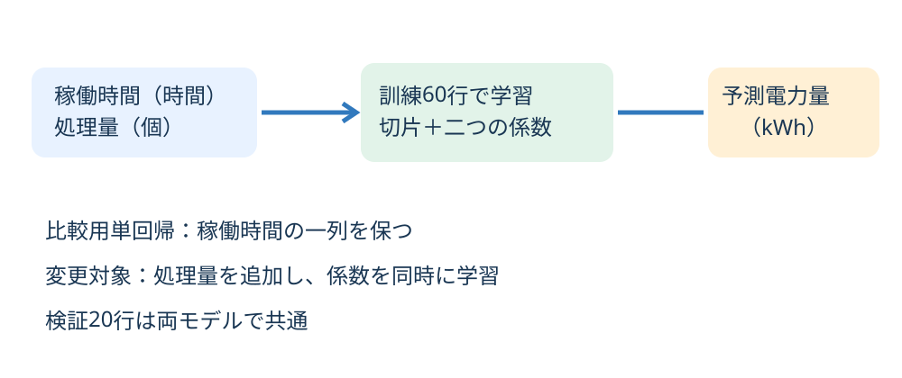
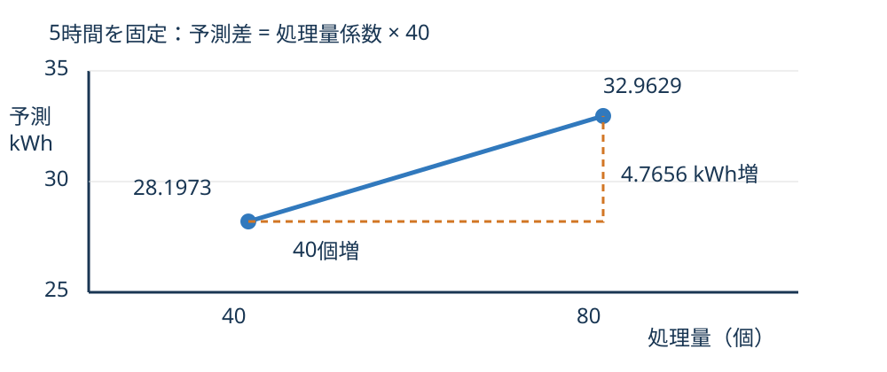
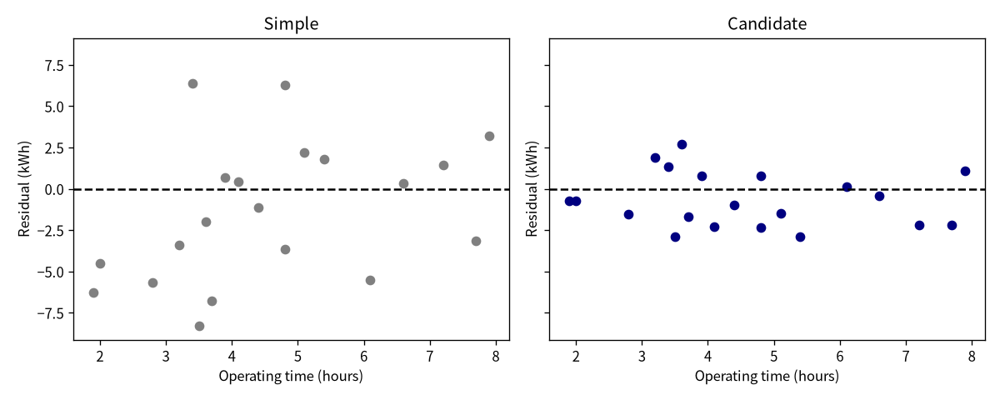
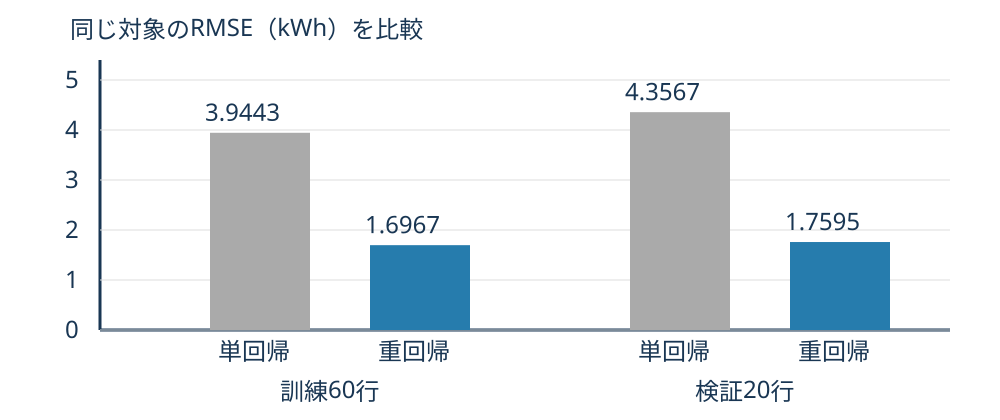

重回帰分析1
予想 → 一列追加 → 独立照合 → 説明
描画ひな形は完成済みです。
| 列 | 役割・単位 |
|---|---|
| operating_hours | 説明変数：時間 |
| throughput_units | 追加する説明変数：個 |
| energy_kwh | 目的変数：kWh |
idとsplitは行・役割の確認に使う。
本文§2・§7で確認。


予測 = 切片 ＋ 時間係数×時間 ＋ 処理量係数×個数
どちらの指標もkWh。第10回§4を復習。

相手の出力CSVを入力にしない。
途中で係数を丸めない。
| 項目 | 概数 |
|---|---|
| 切片 | 7.643087 kWh |
| 時間係数 | 3.157720 kWh/時間 |
| 処理量係数 | 0.119140 kWh/個 |
| E005の予測／残差 | 36.620440／+0.799560 kWh |
| モデル | MAE | RMSE |
|---|---|---|
| 単回帰 | 3.659940 | 4.356684 |
| 重回帰 | 1.555286 | 1.759485 |
単位はkWh。この20行では両指標が小さい。

実測はない。誤差は計算しない。
本文§9の自己チェック5項目を確認。
未完成でもコードと状況を提出する。
今回のコード・結果・自分の説明を残す。